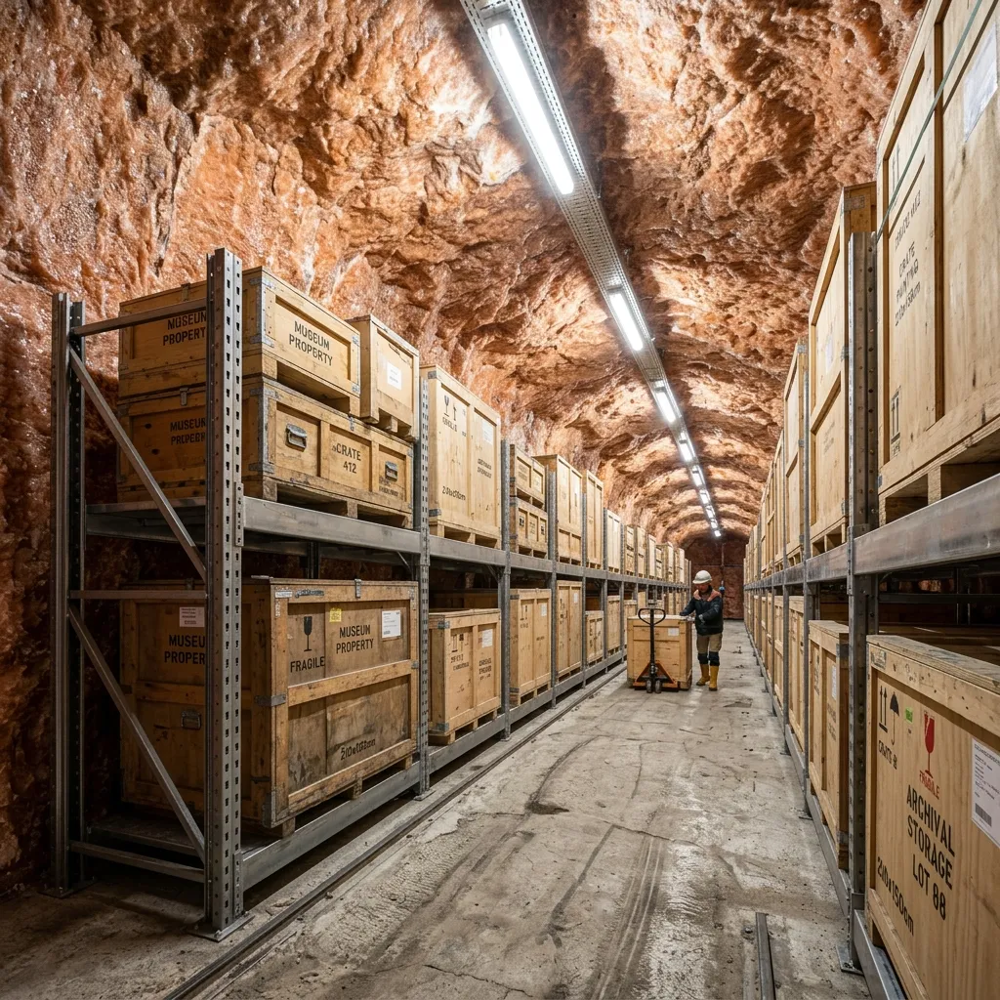

The Winsford Vaults.
Purpose-built modular cleanrooms within a prehistoric geological formation.
Our subterranean architecture represents a rigorous intersection of raw geological stability and clinical engineering. We construct self-contained, pharmaceutical-grade cleanrooms directly into the ancient halite tunnels, forming an impermeable barrier between the raw rock salt and our sterile holding environments. This modular approach allows for scalable, highly calibrated isolation chambers deep within the earth.
The Stratum-B Sterile Laboratory
The Stratum-B Sterile Laboratory operates as the primary intervention sector for uncrating and evaluating hyper-sensitive contemporary installations. Constructed as an ISO Class 6 positive-pressure cleanroom, this facility prevents any ingress of particulate matter from the surrounding mine shafts. Before restoration protocols begin, our conservation scientists must pass through a strict biometric airlock and a multi-stage particulate shower. The laboratory interior is entirely lined with non-reactive, anti-static panels, providing an empirically neutral environment for spectrographic analysis and structural consolidation.
By establishing this absolute barrier against external contaminants, we allow registrars to safely expose and document volatile materials—such as rapidly degrading synthetic polymers and highly reactive metallic composites—without risking secondary atmospheric contamination during the critical intake phase. This positive-pressure isolation also neutralises the threat of airborne fungal spores that aggressively colonise modern canvases stored in standard commercial warehouses. Within the Stratum-B sector, every atmospheric variable is forcibly subjugated to precise, continuous scientific control.
Environmental Tolerances
Temperature Variance: ±0.5°C
Relative Humidity: 45% (±2%)
Particulate Filtration: HEPA Class H14
UV Index: Absolute Zero
Environmental Telemetry
Absolute stability requires relentless empirical verification. Isocline Preservation deploys a proprietary network of highly calibrated environmental telemetry sensors throughout every storage sector. These diagnostic nodes conduct continuous, real-time data-logging of ambient temperature, relative humidity, and the presence of volatile organic compounds (VOCs). Given that many contemporary synthetic resins actively off-gas corrosive compounds as they age, monitoring VOC accumulation within an isolation chamber is critical to preventing the accelerated degradation of adjacent artworks. This granular telemetry data is not merely archived internally; it is continuously streamed to a secure, encrypted client portal. Museum registrars and private collection managers can log in at any time to independently verify the exact atmospheric conditions surrounding their assets. Should any metric deviate by more than 0.2 percent from its assigned baseline, automated fail-safes immediately trigger supplemental filtration systems and notify our on-site conservation team.
Sub-Surface Access Control
Our subterranean location provides an unparalleled, inherent physical deterrent that surface-level vaults cannot replicate. Operating 150 metres below the Cheshire landscape, the facility is accessible solely through a single, heavily fortified heavy-duty lift shaft. This singular choke point allows our security personnel to monitor and control every individual asset entering or exiting the active strata. Beyond the structural fortifications, access to the primary cleanrooms is restricted by multi-factor biometric airlocks, ensuring that only authorised conservation scientists can breach the sterile perimeter. Furthermore, we maintain constant seismic monitoring across the entire geological formation, providing real-time data on localized tectonic stability. The sheer depth and isolation of the Winsford rock salt mine inherently guarantees absolute operational security and physical containment.
Facility & Logistics FAQ
What are your insurance liability limits for individual vaulted items?
We maintain comprehensive, bespoke liability coverage underwritten by specialist fine art syndicates in London. Our standard policy accommodates individual valuation limits exceeding fifty million pounds per modular containment unit. We can arrange extended coverage for exceptional international loans upon registrar request.
How do you guarantee power redundancy in a subterranean environment?
The facility is supported by an independent, multi-tiered emergency power infrastructure. We maintain dual subterranean diesel generators, capable of powering all primary HEPA filtration and climate telemetry systems autonomously for up to twenty-one days without requiring surface refuelling operations.
Do you offer secure disposal for contaminated or off-gassing custom crating?
Yes. Many historical wooden crates harbor woodboring insects or off-gas harmful acidic compounds. We provide clinical dismantling and secure incineration services for all degraded crating, replacing them with our proprietary inert, museum-grade synthetic transit housing before final vaulting.
Are there private viewing rooms available for prospective buyers or curators?
We operate two dedicated, sterile viewing galleries adjacent to the main Stratum-B laboratory. These rooms maintain identical climate tolerances to the storage vaults and are equipped with neutral, high-CRI lighting systems, allowing registrars or clients to safely inspect works without breaking the clinical perimeter.
How do you mitigate the risk of radon gas accumulation in the mine?
Unlike granite formations, halite rock salt strata emit statistically negligible levels of radon. Nevertheless, our positive-pressure ventilation systems completely cycle the ambient air within the primary corridors every four hours, ensuring total mitigation of any naturally occurring subterranean gases.
Do you operate dedicated transport shuttles from London galleries?
Yes. We dispatch highly secure, climate-controlled transport vehicles on a weekly scheduled rotation between Mayfair, central London institutions, and the Cheshire facility. These shuttles utilise advanced air-ride suspension to minimize mechanical vibration during transit to the sub-strata vault.